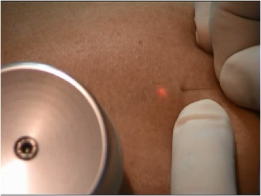
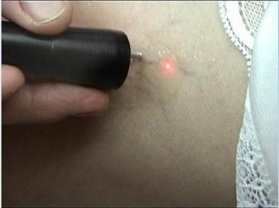

JLSC
Jordan Laser Surgical Center
مركز الأردن لجراحة الليزر
دوالي الساقين والدوالي العنكبوتية
الدوالي هي أوردة متوسعة و ملتوية. الأوردة المتضررة بالعادة هي تلك التي في الساقين والقدمين. و من أشكالها الدوالي العنكبوتية.
في كثير من الحالات تكون دوالي الساقين و الدوالي العنكبوتية هي مجرد مشكلة جمالية ولكن في حالات أخرى يمكن أن تسبب الدوالي بالألم والانزعاج. أحيانا تؤدي الدوالي إلى مشاكل أكثر خطورة لذلك يجب الحصول على تقييم صحيح و استشارة من طبيب مختص لمعرفة سبب المشكلة و معالجتها. قد يشمل العلاج تدابير الرعاية الذاتية أو إجراءات من قبل الطبيب لإغلاق أو إزالة الأوردة
ما هي دوالي الساقين ؟

الدوالي هي عروق ( أوردة) متوسعة يمكن أن تكون ذات لون أزرق، أحمر، أو بنفس لون الجلد. غالبا ما تبدو كالجبال وتكون ملتوية ومنتفخة. قد تظهر بارزة عن سطح الجلد. غالبا ما تتواجد الدوالي على الفخذين وعلى بطة الرجل، أو داخل الساق.
دوالي الساقين مماثلة للدوالي العنكبوتية إلا أنهما مختلفتين طبياً . وتعتبر الدوالي شكل أكثر حدية لأشكال القصور الوريدي من الدوالي العنكبوتية .
تحدث الدوالي بسبب الصمامات الضعيفة والتالفة داخل الأوعية الدموية التي هي غير قادرة على توجيه الدم الى القلب بشكل صحيحي دون رجوع عكسي للدم. عندما تصبح الصمامات ضعيفة، يمكن أن يتدفق الدم الى الوراء من خلال الأوردة ويتجمع في الساقين.
هناك العديد من العوامل التي تزيد من خطر الإصابة بالدوالي، مثل:
- العمر
- إصابة أكثر من شخص في العائلة بدوالي الساقين
- التغيرات الهرمونية، مثل انقطاع الطمث
- الحمل
- البدانة
- زيادة التعرض لأشعة الشمس
وغالبا ما يصحب دوالي الساقين مجموعة من الأعراض و التي يمكن أن تصبح مؤلمة إذا تركت دون علاج.
أعراض الدوالي :
- ألم من خفيف الى شديد
- خفقان ونبض في القدم
- تشنج في الساق
- تورم
- ثقل في الساق
- طفح الجلدي أو أي شكل آخر من تهيج الجلد
- متلازمة تململ الساقين
- اسوداد في الجلد
هذه الأعراض يمكن أن تطور وأن تصبح أكثر حدة بمرور الوقت. إذا تركت دون علاج، يمكن أن الدوالي تزيد من خطر الجلطة، جلطات الدم، والنزيف والتقرحات الجلدية.
ما هي الدوالي العنكبوتية؟

الدوالي العنكبوتية هي مثل دوالي الساقين ولكن أصغر حجماً كما أنها أقرب إلى سطح الجلد من دوالي الساقين. يمكن أن تبدو كخطوط متعرجة. ويمكن العثور عليها على الساقين والوجه ويمكن أن تغطي إما منطقة صغيرة جدا أو كبيرة جدا من الجلد.
هذا النوع من الدوالي يمكن أن يصيب أي من الأطراف في الجسم، ولكن هو أكثر شيوعا في الساقين. ومن المعروف أيضا بأن الدوالي العنكبوتية أو توسع الشعيرات يصيب حوالي 30 في المئة من البالغين، معظمهم من النساء.
هناك عدد من العوامل التي تزيد من خطر إصابتك بالدوالي العنكبوتية وهي ذاتها العوامل التي تزيد من فرصة الإصابة بالدوالي بشكل عام و المذكورة أعلاه.
على عكس دوالي الساقين ، الدوالي العنكبوتية لا تنتفخ او تبرز عن سطح الجلد. قد تظهر الأوردة بشكل خافت و من دون لون أو ذات لون أزرق أو أحمر أو أرجواني.
متى يجب أن أحصل على استشارة بخصوص الدوالي؟
يجب عليك مراجعة الطبيب حول الدوالي إذا: أصبحت منتفخة أو مؤلمة عند اللمس هناك تقرحات أو طفح جلدي على الساق أو بالقرب من الكاحل الجلد على الكاحل والساق قد أصبح سميك وتغير لونه حدوث نزيف من الدوالي أعراض ساقك تتداخل مع الأنشطة اليومية الخاصة بك منظر الأوردة يسبب لك الضيق من الناحية الجمالية
إذا كنت تواجه الألم، حتى لو كان مجرد وجع خفيف، لا تتردد في الحصول على مساعدة. قم بزيارة مركزنا للحصول على التشخيص اللازم من قبل الدكتور إبراهيم وتعرف على العلاج الأكثر مناسبة لحالتك.
هناك العديد من الأنواع و الأشكال لدوالي الساقين و الدوالي العنكبوتية
هنا تستطيع التعرف على البعض منها:


 التقييم و التشخيص
التقييم و التشخيصمن المهم جدا أن يكون الحصول على التقييم الصحيح من أجل اختيار طريقة العلاج المناسب لحالتك.
سيتألف هذا التقييم من:
الموجات فوق الصوتية - الدوبلار الملون - هو جهاز يستخدم الموجات الصوتية لإعطاء صور للأوعية الدموية واتجاه تدفق الدم ، ويسمح للطبيب أن يرى بالضبط ما يجري في العروق والأوردة العميقة والسطحية ويظهر أي تدفق للدم إلى الأسفل أي بمعنى ارتداد عكسي غير طبيعي للدم . حل هذا التقييم محل الاختبارات القديمة المستخدمة سابقاً. أنه يوفر خريطة مفصلة للعروق والأوردة ويسمح لعلاج أكثر دقة.
الفحص بالدوبلار الملون الصوتي يستغرق حوالي 30 دقيقة لكل ساق. الإجراء غير مؤلم وليس له آثار جانبية.الحلول الجراحية
الجراحة تعمل عن طريق إزالة الدوالي الغير طبيعية تماما بحيث لا يستطيع الدم أن يتدفق من خلالها في الاتجاه المعاكس.
الجراحة تعمل عن طريق إزالة الدوالي الغير طبيعية تماما بحيث لا يستطيع الدم أن يتدفق من خلالها في الاتجاه المعاكس. الهدف من الجراحة هو التعامل مع سبب و أساس الدوالي وهو ارتداد الدم في الاتجاه المعاكس لحركته الطبيعية في الوريد . كما أن الجراحة قد تكون من أفضل الحلول للدوالي الكبيرة الحجم .

سحب الأوردة المتفرعة المتعرجة
سحب الوريد هي تقنية جراحية بأقل تدخل جراحي لإزالة الأوردة المتوسعة ذات الحجم المتوسط الى الكبير. يتم تقييم ساقك بداية باستخدام الموجات فوق الصوتية (ultrasound) و يتم وضع علامات على الوريد باستخدام قلم تحديد خاص بعملية تسمى (mapping) . من ثم يتم اعطاء التخدير الموضعي في موقع الشق لتخدير المنطقة بأكملها. باستخدام مجموعة من الأدوات الخاصة، يقوم الطبيب يعمل شقوق صغيرة في الجلد لإزالة الأوردة المتضررة. الشقوق صغيرة بحيث لا تحتاج الى غرز وبتم إزلة الوريد المتضرر من خلال هذه الشقوق. بعد إزلة الوريد المتوسع ستقوم أوردة صحية أخرى بمتابعة نقل الدم بدلاً من الوريد الذي تمت ازالته وبالتاي إعادة تدفق الدم الطبيعي،وبالتالي ينبغي تحسن الأعراض الخاصة بك بشكل ملحوظ
قطع الوريد يقدم إزالة الوريد بشكل دائم من دون أتلون الجلد أو ظهور قرحة
نزع الوريد (Vein Stripping)
نزع الوريد ويشمل هذا الإجراء إزالة الوريد الطويل من خلال شقوق صغيرة. هذا الإجراء يحتاج الى التخدير العام. إزالة الوريد لا يؤثر سلبا على الدورة الدموية في الساق بسبب قيام الأوردة العميقة في الساق بمتابعة تدفق الدم.

ما تحتاج لمعرفته
في حالة رجوعك الى المنزل في نفس يوم العملية فلن تكون قادر على القيادة بل ستحتاج إلى تواجد شخص على الأقل لإيصالك الى المنزل والبقاء معك و الاهتمام بك .المعظم يكونون قاردين على متابعة حياتهم اليومية خلال أيام قليلة ولكن إن كان عملم يتضمن الوقوف أو يحتاج الى نشاط بدني كبير فمن الأفضل لك ملازمة المنزل لعشرة أيام أو أسبوعين . نتوقع أن يعود لجميع الى الأنشطة الرياضية والبدنية في غضون 6 أسابيع. من الطبيعي أن يكون لديك بعض الرضوض والشعور بعدم الراحة لعدة أسابيع. كما أن احتمالية حصول ندب صغيرة هو عموماً في الحد الأدنى.
Sclerotherapy علاج الدوالي بالتصليب
علاج الدوالي بالتصليب هو إجراء طبي آمن يتخلله الحد الأدنى من التدخل الطبي الجراحي، وذو فعالية عالية جداً لعلاج وإزالة الدوالي والعروق العنكبوتية .

الإجراء الطبي المتبع
يستخدم العلاج بالتصليب إبر صغيرة لحقن مادة كيماوية سائلة أو رغوية مباشرة في الأوردة السطحية المرئية. مما يؤدي الى تهيج بطانة الأوعية الدموية ، الامر الذي يعمل على التصاق البطانة ببعضها البعض و على تجلط الدم داخلها مما يتسبب في معالجة هذه الأوردة فتتقلص و تختفي. غالبا ما يتطلب العلاج جلسات متعددة للحصول على نتائج كاملة، ولكن بمجرد اختفاء الأوردة لمرة واحدة فإنها لن تعود الى الظهور .
المرشحين لهذا العلاج
قبل البدء بالعلاج فسيكون لديك موعد استشاري أولي مع الدكتور إبراهيم جعافرة والذي سيقرر إذا كنت مرشحا جيدا لهذا الإجراء. المرأة الحامل ليست من المرشحين لهذا العلاج الى أن تضع مولودها ولكن قد تكون هناك حاجة إلى احتياطات معينة للسيطرة على المشكلة. عموما لا تدخل الأوردة التي يحتمل الحاجة اليها في المستقبل لمتابعة الدورة الدموية في هذا العلاج الا في حالة التأكد من عدم الجدوى منها .

ما يجب القيام به قبل البدء بالعلاج بالتصليب
يجب تجنب بعض الأدوية والتي يحددها طبيبك ( والأعشاب ، والمكملات الغذائية ) تتخذونها. أحياناً تكون هناك حاجة إلى أخذ المضادات الحيوية قبل العلاج ، . ينبغي عدم استخدام اي مرطب أو محلول على الساقين قبل الإجراء. بعض الأطباء يوصي بتجنب الأسبرين والايبوبروفين ( مثل أدفيل ، موترين ، و نوبرين ) أو غيرها من الأدوية المضادة للالتهابات قبل 48-72 ساعة من العلاج بالتصليب.
طرق التصليب بالحقن
الحقن المباشر للاوردة المرئية بالعين المجردة. الحقن بمساعدة الكاشف الضوئي. الحقن الموجه بالدوبلار. الحقن السائل و الحقن الرغوي.
ما يجب معرفته
العلاج بالتصليب هو إجراء غير مؤلم و سهل ولكن قد يسبب بعض الانزعاج لدقيقة أو اثنتين ، وخصوصا عندما يتم حقن أوردة أكبر حجماً. الإجراء نفسه يستغرق حوالي 30 دقيقةولكت بعتمد على الحالة . عدد الأوردة التي تحقن في الجلسة الواحدة تختلف ، و يعتمد على حجم وموقع الأوردة ، وكذلك الحالة الطبية العامة للمريض . يجب ارتداء الجوارب الضاغطة بعد الإجراء و عدم المشاركة في النشاطات البدنية لبضعة أيام ، باستثناء المشي الذي يعتبر ضرورياً للمساعدة على الشفاء الكامل .

الآثار الجانبية للعلاج بالتصليب
قد تواجه بعض الآثار الجانبية بعد العلاج بالتصليب . هناك آثار أكثر اعتدالا ، مثل الحكة ، والتي يمكن أن تستمر ل مدة يوم أو يومين بعد العملية. أيضا ، قد تلاحظ وجود أثار ،ومناطق حمراء في موقع الحقن . هذه يجب أن تختفي في غضون أيام قليلة . قد تحدث كدمات أيضا حول مكان الحقن و يمكن أن تستمر عدة أيام أو أسابيع.
غيرها من الآثار الجانبية تشمل:
العلاج بالليزر داخل الوريد ( الجراحة بالليزر ) (Endovenous Laser Treatment)
العلاج بالليزر داخل الوريد هو علاج مناسب للدوالي ذات الحجم الكبير. هو إجراء غير جراحي مبتكر ، يستخدم العلاج الليزر لإنهاء المشكلة بشكل آمن وفعال ، وبالتالي القضاء على المشكلة من جذورها .

كيفية تنفيذ الإجراء
يتم تنفيذ هذه النوع من العلاجات بحيث يكون المريض مستلقي. يتم تخدير الوريد باستخدام حقن مخدر موضعي . يتم وضع ألياف الليزر في وقت لاحق في مركز الوريد تبعاً لصورة الموجات فوق الصوتية مما يؤدي إلى تسخين الجزء الداخلي من الوريد فيغلق الوريد على نفسه . يتبع هذا العلاج استخدام الحقن بإرشاد الموجات فوق الصوتية أو الليزر الخارجي والداخلي من حول الأوردة لعلاج أي الدوالي المتبقية والتي تكون بالعادة تفرعات صغيرة . الإجراء عادة ما يستغرق 60 دقيقة.
اجراءات ما بعد العلاج
بعد كل جلسة علاج ستكون هناك حاجة لارتداء الجوارب الضاغطة الخاصة لمساعدة الوريد على الانغلاق على نفسه . يجب الاستمرار في ارتداؤه لمدة 3-4 أيام بشكل متواصل . من ثم يجب ارتداؤها لمدة 7-10 أيام أخرى ، ولكن خلال هذا الوقت يمكن عدم ارتداؤه عند الاستحمام أو في السرير خلال فترة الليل. من الضروري المشي يوميا لمدة 45-60 دقيقة خلال ارتداء الجوارب الضاغطة .
الآثار الجانبية
لهذا العلاج بالليزر عدد من الآثار الجانبية المحتملة بما في ذلك آلام الساقين البسيط ، وتصبغ ، ظهور الأوردة العنكبوتية ، والكدمات ، وأمراض الحساسية
ما عليك معرفته
يمكنك بعد ذلك العودة إلى الأنشطة المعتادة الخاصة بك مع الحد الأدنى من الراحة . من الطبيعي أن تشعر بما يشبه بالشد داخل الرجل بشكل طفيف لبضعة أيام . للحصول على أفضل النتائج، نوصي ارتداء جوارب ضاغطة خلال النهار في الأسبوع الأول بعد العلاج . وقد ثبتت فعالية الإجراء بحيث وصلت 98 ٪
العلاج بالليزر الداخلي حول الوريد
هذا العلاج يستعمل لإزالة الدوالي العنكبوتيه من خلال الجلد و إدخال ألياف الليزر تحت الجلد وصولا إلى الأوردة العنكبوتيه و تنشيفها من حولها ويؤدي إلى اختفائها نهايا

العلاج بالليزر
العلاج بالليزر والنبض الضوئي المكثف (ILP) يدمر الأوردة العنكبوتية الصغيرة والدوالي الصغيرة باستخدام الحرارة. تتسبب الحرارة بتشكيل أنسجة ندبية داخلية تعمل في نهاية المطاف على إغلاق الوريد. بالنسبة لبعض المرضى، هذا بديل رائع عن العلاج بالحقن. قد تشمل الآثار الجانبية الطفيفة في المنطقة المعالجة تلون الجلد المؤقت .
باستخدام العلاج بالليزر الخارجي تختفي دوالي التفسخات الشعرية نهائياً

 Facebook
Facebook LinkedInIn
LinkedInIn Jeeran
Jeeran